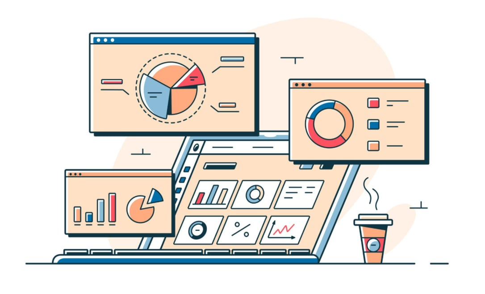

Author:Emmanuel Shem Morado
Mathematics is one of the fields that we use daily for a variety of reasons. People can utilize Math to help them with financial decisions, problem-solving abilities, and efficiently accomplishing all types of daily tasks.
In our daily lives, we utilize Math in numerous ways. Many different types of Math help us in our daily lives, whether telling time, creating budgets, cooking, or shopping.
For example, in a recipe, you must know how to measure an ingredient (using fractions and units of measure) and calculate the price of a purchase and its associated taxes, and determine how much you paid for an item based on its discount and total purchase price.
In addition, as you manage your personal expenses, you need to be able to perform basic Math functions, such as adding and subtracting.
Business requires a significant amount of Math. Businesses will use Math to calculate their profitability, expenses, and determine what price to charge for their products or services.
Business owners will track sales, create and maintain budgets, and analyze the financial performance of the business using mathematical calculations. To assist with their business decisions, utilize various mathematical concepts such as percentages, ratios, and statistics for the betterment of the business’ operations.
Modern technology is built on a foundation of Math. For example, computers, data analysis, and digital communications, all take advantage of Mathematics as their base form of operation and measurement.
Algorithm is a set of sequential procedures used to solve a mathematical problem; many algorithms are dependent upon Mathematical principles and guidelines. Some examples of where Math is used in the Technology industry include the development of all types of computer-based applications, developing video games, and designing artificial intelligence systems (e.g., robots). Without Mathematics, all this advanced technology would be impossible.

In summary, most of us use some sort of Mathematics in our everyday lives; whether it be through business operations, cooking, shopping, playing video games, or communicating via the internet. We cannot escape Mathematics!